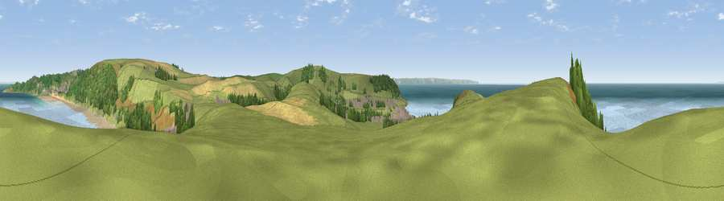

Viewpoint near Croyde
#4441 in England · top 17% of its area beats it · near CroydeThe view, rendered

A 360° render of this exact spot computed from the terrain model, tree cover and land cover — summer colours, afternoon light, calibrated against photographs of famous viewpoints. Real trees, hedges and buildings will differ in detail.
The panorama
Grey silhouette: terrain skyline in each direction (720 bearings, Earth curvature and refraction included). Dashed green: skyline with trees (+15 m) and buildings (+8 m) as obstacles. Blue strip: how far the ground is visible on each bearing.
Where the view opens
Wedge length = distance to the farthest visible ground on that bearing (vegetation-aware). Rings at 10, 25 and 50 km.
What fills the view
61% water · 24% grassland · 8% woodland · 5% cropland · 2% bare ground · 1% built-up
Angular shares of the visible panorama (visual magnitude), not map area. Landscape diversity 0.48 (0–1 Shannon).
Key numbers
More beautiful places nearby
The staircase of upgrades: each row has a higher view potential than everything closer. Driving times are estimates from straight-line distance, calibrated against real road routing — check an actual route before setting out.
| Place | Direction | Drive | Score |
|---|---|---|---|
| Napps Cliff Top | W · 0 km | ~1 min | 75.4 |
| Viewpoint near Croyde | W · 2 km | ~4 min | 81.3 |
| Viewpoint near Georgeham | ENE · 2 km | ~5 min | 83.5 |
| Viewpoint near Woolacombe | NE · 2 km | ~5 min | 84.7 |
| Viewpoint near Combe Martin | ENE · 16 km | ~29 min | 86.9 |
| Viewpoint near Combe Martin | ENE · 17 km | ~30 min | 88.9 |
| Holdstone Hill | ENE · 19 km | ~33 min | 90.2 |
| The Knoll | ESE · 121 km | ~146 min | 91.0 |
51.14382, -4.23045 · source: screening · position refined by local search. Computed location — check access rights before visiting.